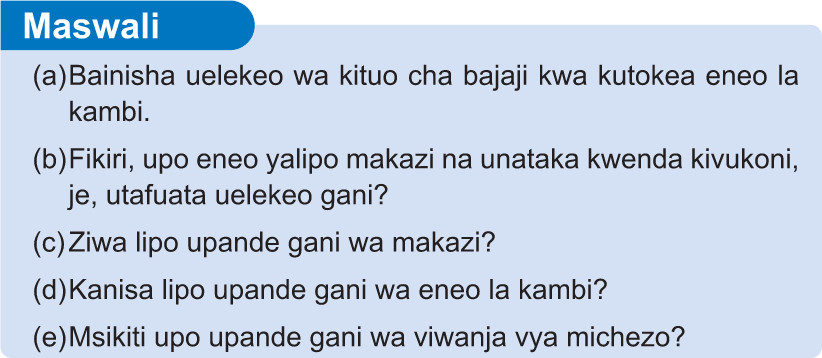

(a)Bainisha uelekeo wa kituo cha bajaji kwa kutoka eneo la kambi.
(b)Fikiri, upo eneo yalipo makazi na unataka kwenda kivukoni, je, utafuata uelekeo gani?
(c)Ziwa lipo upande gani wa makazi?
(d)Kanisa lipo upande gani wa eneo la kambi?
(e)Msikiti upo upande gani wa viwanja vya michezo?
Kubaini Pande Kuu za Dunia kwa kutumia dira
Dira ni kifaa kinachotumika kutambua uelekeo wa Kaskazini. Zipo aina mbili za dira, ambazo ni; dira ya kidijitali na dira ya analojia. Dira ya kidijitali hutumia teknolojia kubaini uelekeo wa Kaskazini. Aina hii ya dira imeunganishwa kwenye GPS, saa za kisasa, simujanja na vyombo vya usafiri kama vile magari, boti na ndege kama inavyowasilishwa katika Kielelezo namba 4. Dira ya analojia hutumia vipande vya sumaku au sindano yenye sumaku kuelekeza upande wa Kaskazini.